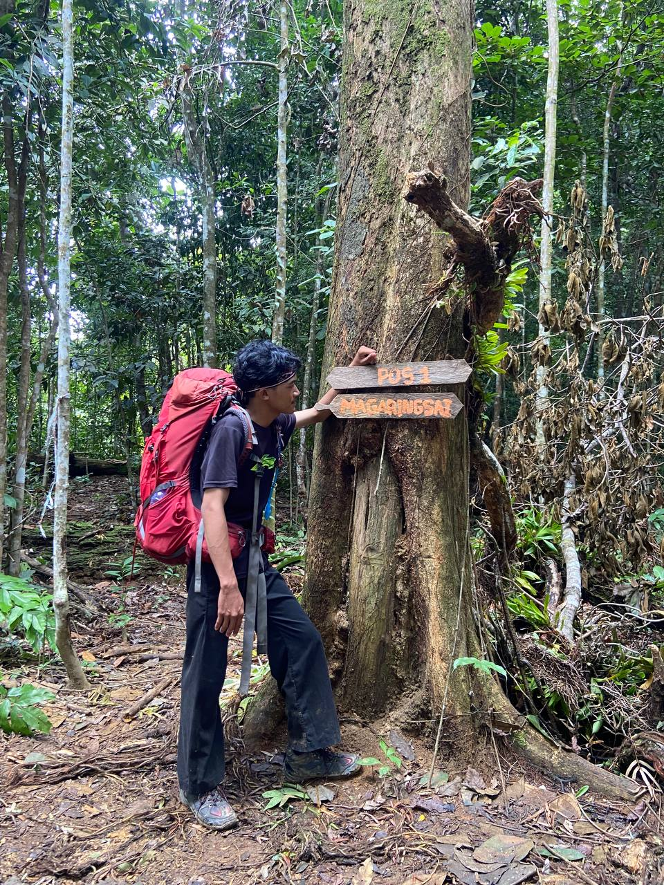

⛰️ Mountain Hiker • Summit Hunter
"Bukan tentang puncaknya, tetapi tentang siapa yang ada di perjalanan."
Lihat PerjalananPendaki gunung yang menyukai alam, perjalanan panjang, dan pengalaman baru di setiap jalur.
Setiap langkah menuju puncak adalah pelajaran tentang kesabaran, kerja sama, dan rasa syukur.
Jangan takut jalurnya berat, karena pemandangan terbaik biasanya ada di atas.